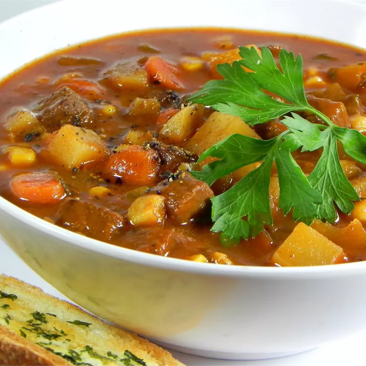

Steak Soup

This steak soup is an extremely hearty soup that only gets better in the fridge.
It is one of the only soups you will not have to jazz up on your own, and people
will remember you for it! This is a great cold-weather soup, but my family requests
it all year.
Ingerdients
- Butter
- Oil
- Steak
- Onion
- Flour
- Paprika
- Salt
- Black pepper
- Beef broth
- water
- Parsley
- Celery leaves
- bay leaf
- Majoram
- Canned Corn
- Potatoes
- Carrots
- Celery
- Tomato paste
Steps
- Melt butter and oil in a large skillet over medium heat until the foam disappears
from butter. Cook and stir beef and onion in butter-oil mixture until browned,
about 10 minute
- While beef is cooking, mix together flour, paprika, salt, and pepper in a small bowl.
Sprinkle flour mixture over browned beef; stir to coat and set aside.
- Pour beef broth and water into a large soup pot. Stir in parsley, celery leaves, bay
leaf, and marjoram. Stir in beef mixture; bring to a boil. Reduce heat to medium-low,
cover the pot, and simmer, stirring occasionally, until meat is tender, about 45 minutes.
- Mix in corn, potatoes, carrots, celery, and tomato paste. Bring to a simmer and cook
uncovered, stirring occasionally, until vegetables are tender and soup is thick, 15 to
20 minutes. Remove bay leaf and serve hot.
Tips
You can double the recipe and freeze some. Refrigeration makes the soup thicker and richer.